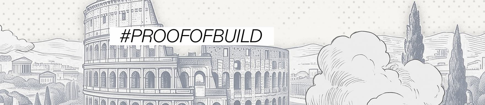
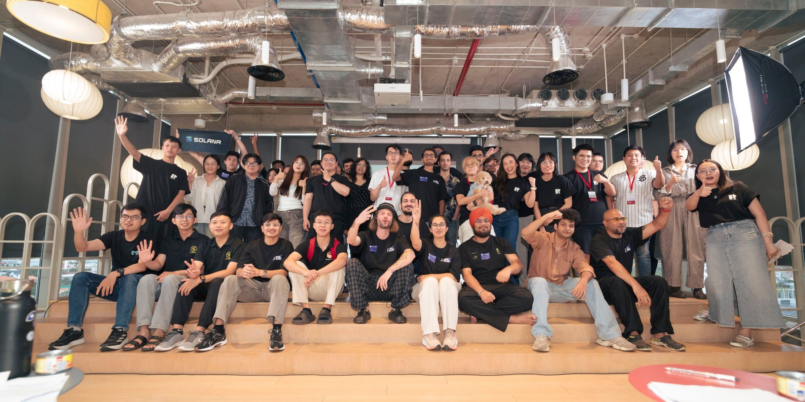
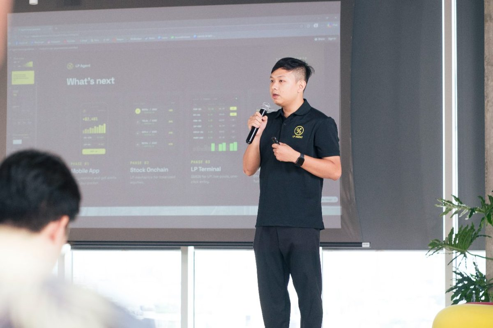
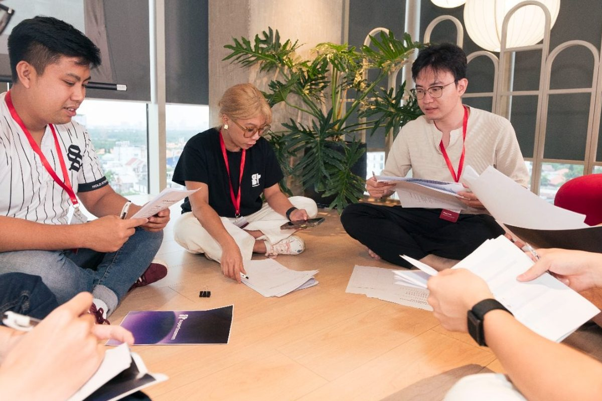
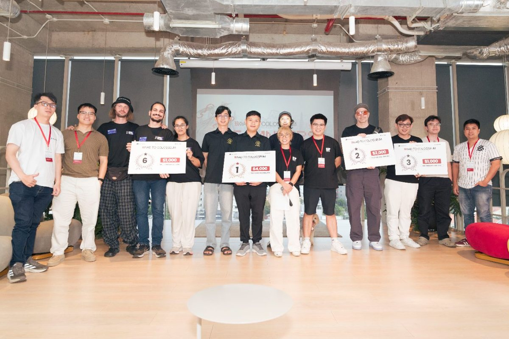
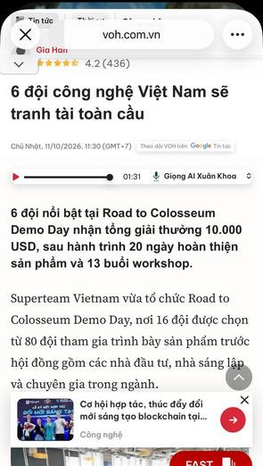
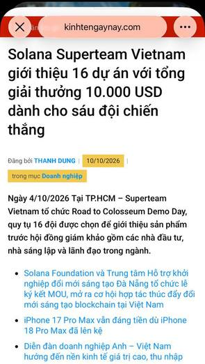
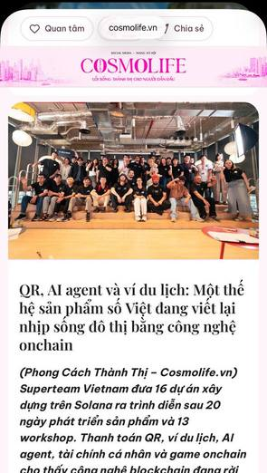
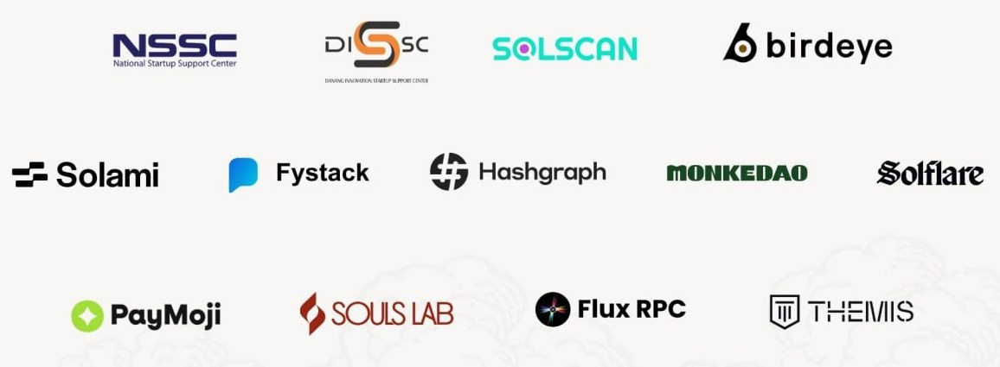
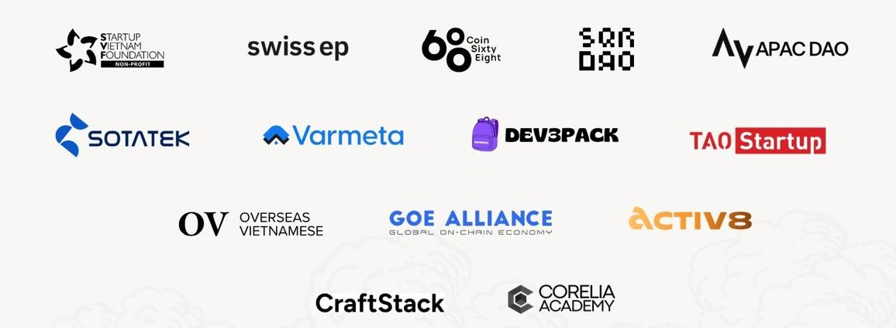

Side track hackathon report
Road to Colosseum - Vietnam Side Track Hackathon takes local teams from a first product to the global stage, and from there to funded companies.


| KPI | Plan | Actual | % of target | Status |
|---|---|---|---|---|
| Registrants | 80 | 111 | 139% | Beat |
| Global submissions to Colosseum | 30 | 34 | 113% | Beat |
| Shortlisted for an interview by Colosseum | 3 | 3 | 100% | Met |
| Track winner or honorable mention | 1 | 1 | 100% | Judging |
Counts the 2,511 projects tagged Solana, out of 2,973 in the directory.
Pitch support was the top request, and 4 of the 8 online sessions covered it. 79% of respondents already had a project or idea (60 of 76).
The team ran 8 online sessions against a plan of 7, 4 offline programs and Demo Day. The 9 sessions with data recorded 292 check-ins.
| Date | Session | Format | Speakers and mentors | Registration | Check-ins |
|---|---|---|---|---|---|
| Sep 5 – Oct 4 | #SHIPMODE Vũng Tàu (Indies on Solana S2) | Offline | Zang (STVN), BK (Superteam India) | 8 teams | 8 teams |
| Sep 17 | Kick-off | Online | Thi (Fystack), David Le (LP Agent), Kay (STVN) | 85 | 45 |
| Sep 19 | Hanoi Builders Meetup | Offline | Tuấn (Solana), Anh L (Souls Lab), Huyền (Legal), Ha Hoang (Solscan) | 100 | 50 |
| Sep 22 | Storytelling for Startups | Online | David Kim | 49 | 40 |
| Sep 23 | Time Tokenization in Action (X live) | Online | Hiếu Bùi (STVN) | 45 | 100 |
| Sep 24 | State of Solana Infra 2026 | Online | Sean (FluxRPC), Kay (STVN) | 50 | 30 |
| Sep 25 | Office Hours: Pitching Rehearsal | Online | STVN team | 22 | 13 |
| Sep 25 – 27 | Buildstation Da Nang | Offline | Hiếu Bùi, Kelvin (STVN) | 45 | 30 |
| Sep 26 | Saigon Builders Meetup | Offline | Châu Khắc (STVN), Thi (Fystack), Kay (STVN) | 73 | 40 |
| Sep 29 | Office Hours: technical | Online | Chaerin Kim (Solana Foundation) | 8 | 8 |
| Sep 30 | Office Hours: business deck | Online | Josip Volarevic (Superteam) | 8 | 10 |
| Oct 1 | The 3-Minute Founder Pitch | Online | Jeffery Tchui (Hashgraph) | 38 | 26 |
| Oct 4 | Demo Day, Sentry P | Offline | Full judging panel | 103 | 80 |
Luma sign-ups and check-ins count per session, so one builder can appear more than once.
16 shortlisted teams pitched at Sentry P in Ho Chi Minh City on Oct 4 for a $10,000 prize pool. Demo Day drew the most check-ins of any session.



Account impressions reached 185.3K in the 32 days from Sep 12 to Oct 13, up 90% on the 32 days before. Net followers grew by 221 against 114.
| Whole account | Sep 12 – Oct 13 | Aug 11 – Sep 11 | Change |
|---|---|---|---|
| Impressions | 185,265 | 97,482 | +90% |
| Engagements | 4,416 | 1,969 | +124% |
| New follows | 277 | 168 | +65% |
| Profile visits | 558 | 300 | +86% |
| Post | Date | Impr. | Eng. | Likes | Reposts |
|---|---|---|---|---|---|
| Trailer | Sep 16 | 23,177 | 518 | 159 | 17 |
| Demo Day aftermovie | Oct 10 | 15,020 | 257 | 98 | 11 |
| “Come hungry. Build hungry.” teaser | Sep 12 | 13,719 | 505 | 340 | 9 |
| Registration opens | Sep 14 | 7,644 | 828 | 104 | 22 |
| Demo Day recap thread | Oct 6 | 3,120 | 242 | 45 | 3 |
| Theme | Posts | Impressions | Median per post |
|---|---|---|---|
| Launch and registration | 4 | 45,200 | 10,681 |
| Recaps, video and live | 14 | 31,281 | 1,213 |
| Workshop and event promos | 18 | 18,628 | 861 |
| Mentors, partners and perks | 10 | 8,968 | 720 |
| Deadline push | 4 | 2,314 | 665 |
| Link replies | 20 | 3,141 | 172 |
Vietnamese business, finance and lifestyle outlets carried the Demo Day story. 20 ran the main headline, 5 ran the $10,000 prize angle and 9 used their own headline.



Builders posted what they learned on X between Sep 17 and Oct 12.
The program gathered key government bodies and partners in Vietnam, including two state innovation centers (NSSC and DISSC) and infrastructure teams such as Solscan, Birdeye and FluxRPC.

